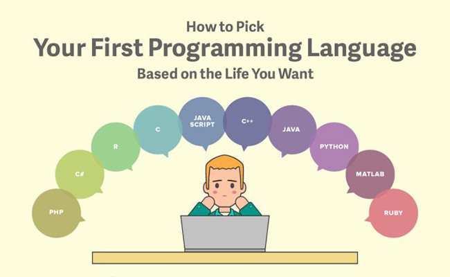

Learning programming
 If you haven’t picked your first programming language, the programming world is your oyster. Yet with evangelists for every language telling you their language is the best, choosing one to start with can be incredibly overwhelming. We’ve looked at the data for the top ten programming languages in the US (based on IEEE Spectrum data) to help you pick the best language to start with based on your priorities in lifestyle, location, and career potential.
Python is a popular, well-paid language, being versatile enough to be used in many different applications, while Javascript is used widely across the country, and can be a good choice if you don’t want to relocate for a job. Although some newer programming languages, such as Swift, are not included, you shouldn’t discount the growth of their popularity. Career opportunities in iOS development using Swift, similar to Android development using Java, will increase as the field of mobile app development continues to expand.
Depending on what it is you want to make or do, your choice might already be made up for you. To build a website or webapp, for example, you should learn HTML and CSS, along with JavaScript and perhaps PHP for interactivity
If your focus is mostly/only on building a mobile app, then you can dive right into learning Objective-C for iOS apps or how to program with Java for Android
Python
Python is a multi-paradigm programming language: object-oriented programming and structured programming are fully supported, and many language features support functional programming and aspect-oriented programming (including by metaprogramming[38] and metaobjects (magic methods)).[39] Many other paradigms are supported via extensions, including design by contract[40][41] and logic programming
Python uses dynamic typing and a mix of reference counting and a cycle-detecting garbage collector for memory management. An important feature of Python is dynamic name resolution (late binding), which binds method and variable names during program execution.
The design of Python offers some support for functional programming in the Lisp tradition. The language has map(), reduce() and filter() functions; list comprehensions, dictionaries, and sets; and generator expressions.[43] The standard library has two modules (itertools and functools) that implement functional tools borrowed from Haskell and Standard ML
Rather than requiring all desired functionality to be built into the language's core, Python was designed to be highly extensible. Python can also be embedded in existing applications that need a programmable interface. This design of a small core language with a large standard library and an easily extensible interpreter was intended by Van Rossum from the start because of his frustrations with ABC, which espoused the opposite mindse